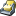
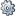

-
JDBC
The control objects are database connections which can be in the following active states:
-
Statement execution
A statement created via one of the java.sql.Connection#createStatement(...)
methods is being executed.
-
Prepared statement execution
A statement created via one of the java.sql.Connection#prepareStatement(...)
or java.sql.Connection#prepareCall(...) methods is being executed.
-
Batch execution
java.sql.Statement#executeBatch() is being executed on a statement.
The probe annotates the SQL strings of statements into the call tree and shows
them in the hot spots view.
The following telemetries are provided:
-
Executed statements
The number of executed statements per second.
-
Average statement execution time
The average execution time in seconds for statements that completed in the last second.
-
Recorded open connections
The number of open database connections at any time.
By default, the probe records single events and starts recording at startup.
There are special configuration options for this probe.
-
JPA/Hibernate
There are no control objects for this view, so the probe does not have time line and control objects views.
The probe annotates the SQL strings of persistence operations into the call tree and shows
them in the hot spots view.
The following telemetries are provided:
-
Entity Operation Count
The number of entity operations per second.
-
Query Count
The number of executed queries per second.
-
Query Duration
The average duration of queries in the last second.
By default, the probe records single events and starts recording at startup.
There are special configuration options for this probe.
-
 JNDI
There are no control objects for this view, so the probe does not have time line and control objects views.
The probe annotates JNDI query strings into the call tree and shows them in the hot spots view.
Query strings are prepended with "[NAME]" and optionally have a "[FILTER]" part at the end for JNDI searches.
By default, the probe records single events and starts recording at startup.
-
JMS
There are no control objects for this view, so the probe does not have time line and control objects views.
There are two event types: "Synchronous message" and "Asynchronous message".
The probe annotates JMS message descriptions into the call tree and shows them in the hot spots view.
The displayed JMS message description can be customized.
By default, the probe records single events and starts recording at startup.
-
Servlets
There are no control objects for this view, so the probe does not have time line and control objects views.
The probe splits the call the for each detected request URL so you can analyze request separately in the
call tree view. The URLs are also shown in the probe hot spots view.
The way how distinct request URLs are determined can be customized.
By default, the probe does not record single events and starts recording at startup.
-
Files
The control objects are files of the following types:
-
RandomAccessFile
A random access file which can be both read from and written to.
-
FileInputStream
A file input stream which can only be read from.
-
FileOutputStream
A file output stream which can only be written to.
They can be in the following active states:
-
Read
Data is being read from the file via the java.io package.
-
Write
Data is being written to the file via the java.io package.
-
Channel read
Data is being read from the file via the java.nio package (java.nio.channels.FileChannel).
-
Channel write
Data is being written to the file via the java.nio package (java.nio.channels.FileChannel).
If configured, the probe annotates the file names into the call tree and shows
them in the hot spots view. The parent path of a file can be inspected in the nested property table in the control objects view.
The following telemetries are provided:
-
Invocation count
How many read and write operations were performed per second.
-
Throughput
How many bytes were read and written per second.
-
Open files
The number of open files at any time.
By default, the probe does not record single events and does not start recording at startup.
-
Sockets
The control objects are sockets of the following types:
-
Socket
A socket from the java.io package.
-
SocketChannel
A socket channel from the java.nio package.
They can be in the following active states:
-
Read
Data is being read from the socket.
-
Write
Data is being written to the socket.
If configured, the probe annotates the toString() values of the associated
java.net.SocketAddress objects into the call tree and shows
them in the hot spots view.
The following telemetries are provided:
-
Invocation count
How many read and write operations were performed per second.
-
Throughput
How many bytes were read and written per second.
-
Open sockets
The number of open sockets at any time.
By default, the probe does not record single events and does not start recording at startup.
-
 Processes
The control objects are processes which can be in the following active states:
-
Read
Data is being read from the input stream provided by the java.lang.Process object.
-
Write
Data is being written to the output stream provided by the java.lang.Process object.
If configured, the probe annotates the full paths to the executables into the call tree and shows
them in the hot spots view. Command line arguments, working directory, special environment variables
and the exit code can be inspected in the nested property table in the control objects view.
The following telemetries are provided:
-
Live Processes
The number of live processes at any time.
-
Process stream operations
How many read and write operations were made to the process streams per second.
-
Process stream throughput
How many bytes were read from and written to the process streams per second.
By default, the probe does not record single events and does not start recording at startup.